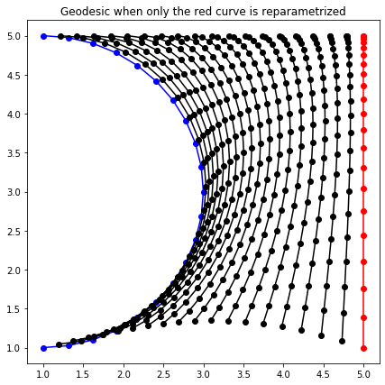
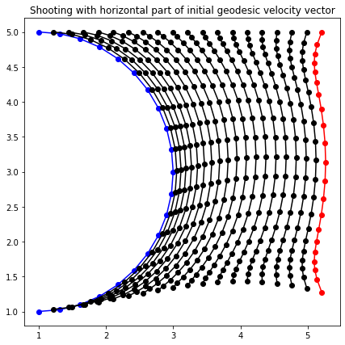
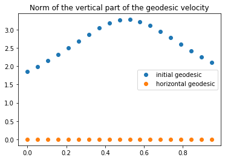

Shape analysis of curves with the Square Root Velocity metric
In this notebook, we demonstrate how to compute distances between curves in a way that does not depend on parametrization, i.e. that only depends on the shapes of the curves. This is achieved using the Square Root Velocity metric (see SKJJ2011) on the space of parametrized curves, and by quotienting out the action of reparametrization through an optimal matching algorithm (see LAB2017). We will use the discrete_curves.py module. Translation and rotation can also be quotiented out using the align method of the pre-shape.py module, but we will not deal with these aspects here. See this usecase for details on the pre_shape.py module, or this other usecase for an application where both modules are used.
The metric we use to compare parametrized curves is the so-called Square Root Velocity metric, that computes an \(L^2\) distance between the velocities of the curves, suitably renormalized to get reparametrization invariance. See SKJJ2011 for more details.
The Square Root Velocity metric is reparametrization invariant in the sense that, if the two curves are reparametrized in the same way, the distance does not change.
geod_fun_2 = curves_r2.square_root_velocity_metric.geodesic(curve_a, curve_b_resampled)geod_2 = geod_fun_2(times)plt.figure(figsize=(7, 7))plt.plot(geod_2[0, :, 0], geod_2[0, :, 1], 'o-b')for i inrange(1, n_times -1): plt.plot(geod_2[i, :, 0], geod_2[i, :, 1], 'o-k')plt.plot(geod_2[-1, :, 0], geod_2[-1, :, 1], 'o-r')plt.title('Geodesic when only the red curve is reparametrized')plt.show()

Distance between unparametrized curves
In order to completely quotient out parametrization, distances are computed in the base space of a fiber bundle where the fibers represent equivalent classes of curves with the same shape (i.e. equal modulo reparametrization). Any infinitesimal deformation of a curve can be split into the sum of vertical deformation (tangent to the fiber) that simply reparametrizes the curve without changing its shape, and a horizontal deformation (orthogonal to the fiber) that changes the shape. The distance between two unparametrized curves is then computed as the length of a horizontal geodesic linking their two fibers.
In practice, to compute the horizontal geodesic linking the fibers of two discrete parametrized curves curve_a and curve_b, we can fix the parametrization of curve_a, and search for a reparametrization of curve_b (i.e. another discrete curve with same shape as curve_b) that best “matches” curve_a.
Since geodesics that start with a horizontal velocity stay horizontal, a first idea would be the following:
compute the geodesic between curve_a and curve_b
compute the horizontal part of its initial velocity vector
The problem with this idea is that, while it yields a horizontal geodesic starting at curve_a, its end point does not belong to the fiber of curve_b: as we cas see below, the end curve of the horizontal geodesic is not a reparametrization of the initial red curve, it does not have the same shape.
plt.figure(figsize=(7, 7))plt.plot(shooted_geod[0, :, 0], shooted_geod[0, :, 1], 'o-b')plt.plot(shooted_geod[-1, :, 0], shooted_geod[-1, :, 1], 'o-r')for i inrange(1, n_times -1): plt.plot(shooted_geod[i, :, 0], shooted_geod[i, :, 1], 'o-', c='k')plt.title('Shooting with horizontal part of initial geodesic velocity vector')plt.show()

To obtain a horizontal geodesic starting at curve_a and ending at a curve with same shape as curve_b, we use an iterative optimal matching algorithm LAB2017. This algorithm moves along the fiber of curve_b to find the best representative with respect to curve_a by iterating the following steps:
step 1: compute the geodesic between curve_a and the current representative of curve_b (initially, curve_b)
step 2: compute the path whose velocity is a reparametrization of the horizontal part of the geodesic velocity at all time, and set the new representative of curve_b to be the end point of this path.
Note that the first step yields a geodesic that is not horizontal, while the second step yields a horizontal path that is not geodesic. By iterating these two steps, the algorithm converges to a horizontal geodesic.
Below we follow similar steps for curves in \(\mathbb R^3\). In this example, we can see that the horizontal geodesic “straightens out” the original geodesic.
geod_velocity = n_times * (geod[1:] - geod[:-1])geod_velocity_hor, geod_velocity_ver, _ = ( curves_r2.quotient_square_root_velocity_metric.split_horizontal_vertical(geod_velocity, geod[:-1]))geod_vertical_norm = curves_r2.square_root_velocity_metric.norm(geod_velocity_ver, geod[:-1])hgeod_velocity = n_times * (hgeod[1:] - hgeod[:-1])hgeod_velocity_hor, hgeod_velocity_ver, _ = ( curves_r2.quotient_square_root_velocity_metric.split_horizontal_vertical(hgeod_velocity, hgeod[:-1]))hgeod_vertical_norm = curves_r2.square_root_velocity_metric.norm(hgeod_velocity_ver, hgeod[:-1])plt.figure()plt.plot(times[:-1], geod_vertical_norm, 'o', label='initial geodesic')plt.plot(times[:-1], hgeod_vertical_norm, 'o', label='horizontal geodesic')plt.legend()plt.title('Norm of the vertical part of the geodesic velocity')plt.show()

References
.. [SKJJ2011] A. Srivastava, E. Klassen, S. H. Joshi and I. H. Jermyn, “Shape Analysis of Elastic Curves in Euclidean Spaces,” in IEEE Transactions on Pattern Analysis and Machine Intelligence, vol. 33, no. 7, pp. 1415-1428, July 2011.
.. [LAB2017] A. Le Brigant, M. Arnaudon and F. Barbaresco, “Optimal matching between curves in a manifold,” in International Conference on Geometric Science of Information, pp. 57-65, Springer, Cham, 2017.